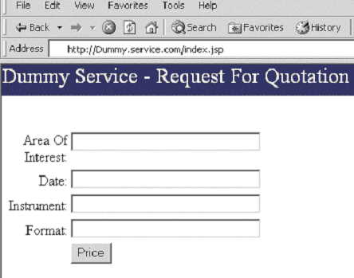

This scenario is applicable when the provided Service is already a Web Application. It is not a real service. In this case the TOOLBOX can be configured to act as an HTTP client. The incoming SOAP message will be converted into an HTTP request to be sent to the Service Provider Web server. The HTTP response is an HTML page. It will be analysed using the text management functionality provided by the TOOLBOX and converted into a SOAP response to be sent to the client.
Let us suppose a Dummy service sells satellite images. It accepts RQFs through the following input form page:

When the Price button is pushed the index.jsp page invokes the service.jsp page passing the parameters included in the form (ROI, DATE, INSTRUMENT and FORMAT). The service.jsp page accesses the service resources and if the product ia available returns an HTML page
<html>
<head>
<title>SUCCESSFUL response page</title>
<meta http-equiv="Content-Type" content="text/html; charset=iso-8859-1">
</head>
<body bgcolor="#FFFFFF" leftmargin="0" topmargin="0" marginwidth="0" marginheight="0">
<table border="0" cellpadding="0" cellspacing="0">
<tr>
<td bgcolor="#333366"><FONT COLOR="#FFFFFF">RFQ RESPONSE</FONT></td>
</tr>
<tr>
<td bgcolor="#333366"><FONT COLOR="#FFFFFF">Product File Name</FONT> </td>
<td>V1KRNS10__20010101_NDVI_Africa.ZIP</td>
</tr>
<tr>
<td bgcolor="#333366"><FONT COLOR="#FFFFFF">Product Size</FONT></td>
<td>23.5</td>
<td>Mb</td>
</tr>
<tr>
<td bgcolor="#333366"><FONT COLOR="#FFFFFF">Available User Quota</FONT> </td>
<td>9.6</td>
<td>Gb</td>
</tr>
</table>
</body>
</html>
If the product is not available the service.jsp page returns an error message.
Let us suppose that the service is published in synchronous mode and the payloads of the SOAP messages incoming from SSE are expected to be the as in following (these are just examples, the correct format of the SOAP messages exchanged with SSE has to be specified according to the SSE ICD)
<?xml version="1.0" encoding="UTF-8"?>
<processRFQInputMsg xmlns="http://www.esa.int/mass" xmlns:aoi="http://www.esa.int/xml/schemas/mass/aoifeatures" xmlns:gml="http://www.opengis.net/gml">
<commonInput>
<orderId>TESTID</orderId>
</commonInput>
<sendRFQInput>
<aoi:areaOfInterest>
<gml:boundedBy>
<gml:null>unavailable</gml:null>
</gml:boundedBy>
<gml:featureMember>
<aoi:Feature>
<gml:boundedBy>
<gml:Box srsName="EPSG:4326">
<gml:coordinates>-20,34.9305 40 ,81.8519</gml:coordinates>
</gml:Box>
</gml:boundedBy>
<aoi:Code>AF</aoi:Code>
<aoi:Label>Africa</aoi:Label>
<aoi:Geometry>
<gml:Polygon srsName="EPSG:4326">
<gml:outerBoundaryIs>
<gml:LinearRing>
<gml:coordinates>-20,34.9305 -20,81.8519 4 0,81.8519 40,34.9305 -20,34.9305 </gml:coordinates>
</gml:LinearRing>
</gml:outerBoundaryIs>
</gml:Polygon>
</aoi:Geometry>
</aoi:Feature>
</gml:featureMember>
</aoi:areaOfInterest>
<userId>mass</userId>
<date>2001-07-21</date>
<instrument>VGT1</instrument>
<format>Radio</format>
</sendRFQInput>
</processRFQInputMsg>
Here is a sample service definition file allowing the Dummy service, based on HTTP communication, to communicate with SSE:
<?xml version="1.0" encoding="UTF-8"?>
<sequence xmlns="http://pisa.intecs.it/mass/toolbox/xmlScript">
<!--THE TOOLBOX EXTRACTS THE NEEDED INFORMATION FROM THE MASS
REQUEST, STORES IT INTO VARIABLES AND LOGS IT-->
<setVariable name="roi">
<xPath>
<xmlRequest/>
<string>/:processRFQInputMsg/:sendRFQInput/aoi:
areaOfInterest/gml:featureMember/ aoi:Feature/aoi:Label</string>
</xPath>
</setVariable>
<setVariable name="date">
<xPath>
<xmlRequest/>
<string>/:processRFQInputMsg/:sendRFQInput/ :date</string>
</xPath>
</setVariable>
<setVariable name="instrument">
<xPath>
<xmlRequest/>
<string>/:processRFQInputMsg/:sendRFQInput/ :instrument</string>
</xPath>
</setVariable>
<setVariable name="format">
<xPath>
<xmlRequest/>
<string>/:processRFQInputMsg/:sendRFQInput /:format</string>
</xPath>
</setVariable>
<setVariable name="orderID">
<orderId/>
</setVariable>
<!-- PERFORMS THE http POST EXCHANGE WITH THE
/S10/service.jsp DEPLOYED ON pisa007.pisa.intecs.it ON PORT 80
USING THE PARAMETERS EXTRACTED FROM THE REQUEST. THE RESULT HTTP
MESSAGE IS SET IN THE TEXT CONTEXT-->
<setText>
<http host="pisa007.pisa.intecs.it" method="POST" port="8080">
<url>
<string>/S10/service.jsp</string>
</url>
<parameter name="ROI">
<variable name="roi"/>
</parameter>
<parameter name="DATE">
<variable name="date"/>
</parameter>
<parameter name="INSTRUMENT">
<variable name="instrument"/>
</parameter>
<parameter name="FORMAT">
<variable name="format"/>
</parameter>
</http>
</setText>
<if>
<!-- CHECKS (<search>) IF THE SUCCESSFUL STRING IS PRESENT
IN THE HTML RESPONSE FILE (WHICH
REPRESENTS THE CURRENT TEXT CONTEXT)-->
<search>
<string>SUCCESSFUL</string>
</search>
<sequence>
<!--THE TOOLBOX LOOKS FOR THE Product Price string, THEN LOOKS
FOR THE <td> TAG AND MARKS (<mark name=End>) THE START AND THE
END OF THE STRING TO EXTRACT; FINALLY EXTRACTS (<extract>) THE PRICE
AND STORES IT IN A VARIABLE-->
<search>
<string>tr</string>
<literal value="4"/>
</search>
<search>
<string>Product Size</string>
</search>
<search>
<string><td></string>
</search>
<horizontalMove>
<literal value="4"/>
</horizontalMove>
<mark name="fStart"/>
<search>
<string><</string>
</search>
<mark name="fEnd"/>
<setVariable name="fileSize">
<extract end="fEnd" start="fStart"/>
</setVariable>
<search>
<string>Available User Quota</string>
</search>
<search>
<string><td></string>
</search>
<horizontalMove>
<literal value="4"/>
</horizontalMove>
<mark name="fStart"/>
<search>
<string><</string>
</search>
<mark name="fEnd"/>
<setVariable name="availableQuota">
<extract end="fEnd" start="fStart"/>
</setVariable>
<!--THE TOOLBOX BUILDS A SUCCESSFUL MESSAGE-->
<xmlGetResponse>
<xml attributePrefix="attribute$" textTag="evaluate">
<mass:getRFQOutput xmlns:mass="http://www.esa.int/mass">
<mass:statusInfo>
<mass:statusId>0</mass:statusId>
<mass:statusMsg>Successful</mass:statusMsg>
</mass:statusInfo>
<mass:rfqOutput>
<mass:productSize>
<evaluate name="fileSize"/>
</mass:productSize>
<mass:userQuota>
<evaluate name="availableQuota"/>
</mass:userQuota>
</mass:rfqOutput>
</mass:getRFQOutput>
</xml>
</xmlGetResponse>
</sequence>
<!--THE TOOLBOX BUILDS A "PRODUCT NOT FOUND" MESSAGE-->
<xmlGetResponse>
<xml attributePrefix="attribute$" textTag="evaluate">
<mass:getRFQOutput xmlns:mass="http://www.esa.int/mass">
<mass:statusInfo>
<mass:statusId>300</mass:statusId>
<mass:statusMsg>Product Not Found</mass:statusMsg>
</mass:statusInfo>
</mass:getRFQOutput>
</xml>
</xmlGetResponse>
</if>
</sequence>